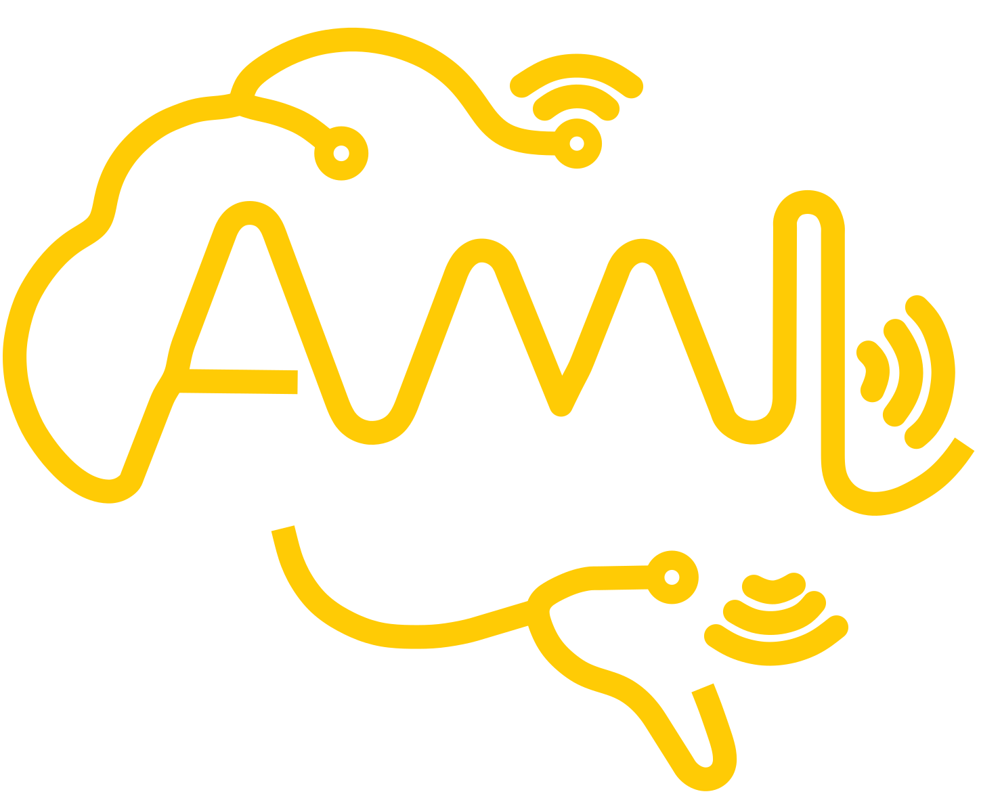

ACM MobiCom 2026 · Austin, TX
MoiréSkin
Ultra-Sensitive Sensor–Actuator
Visuo-Tactile Skin using Moiré Patterns
 Linzhen Zhu
Linzhen Zhu Liuxi Xing
Liuxi Xing Runqiu Wang
Runqiu Wang Ke Sun
Ke Sun

Computer Science & EngineeringUniversity of Michigan

Ambient Intelligence LabAMI Lab
Visuo-tactile sensor
Tactile → visual: a camera reads touch.
- A robot gripper with visuo-tactile sensors
- GelSight
Video: GelSight · youtube.com/watch?v=wCZZnyo7k44
Visuo-tactile sensor
Tactile → visual: a camera reads touch.
- Imaging a pressed screw
- GelSight
Video: GelSight · youtube.com/watch?v=wCZZnyo7k44
Why it matters
Robots need both.
Sensitivityto handle fragile things
+
Complianceto grip them gently
Video: ROBOTIS · youtube.com/watch?v=1-ymnFMMVgk
Our goal
MoiréSkin fills the gap.
Background
What is a moiré pattern?
- A phone filming a screen
- Moiré in the viewfinder
- Mediastorm
Video: Mediastorm 影视飓风 · youtube.com/watch?v=I48vtTxdaeQ
Everyday moirétwo separate objects
Ours: a metasurfacegenerate moiré on one single object
Our insight
A moiré metasurface
amplifies touch.
μmthe film barely bends
mmthe fringes move a lot
Real · light touch
Real sensor · light touch
Hardware
One skin, two jobs.
 Fine grating lines
5 mm
Fine grating lines
5 mm
Our film under a microscope
Coverclear TPU
Upper grating330 μm
Substratesoft silicone
Lower gratingfluorescent
Air chamber
Pumpone controller
Camera1080p · 160°
LED ringfaces down · blue
Diffuse reflector
Fabrication
Two gratings → one soft film.
- Fluorescent lower grating · print it, cure at 65 °C, cast clear silicone over it, peel off
- Clear upper grating · spin-coat on the mold, imprint it on the other face
- One soft film · dry at 40 °C, a 330 μm grating on each face
No cleanroom · reusable molds
Optical design
Clear skin, clear fringes.
Fluorescent grating
keeps high contrast
See through
sees before touch
<$2per cell
No cleanroom
≈ $50 for the whole system
How it works
ApartOverlapAmplifyPressureDriftZero
Two fine gratings.
330 μmtoo fine for the camera
Lower · fluorescent
Upper · clear
Overlap: moiré fringes.
0.33 → 3 mmlines → fringes
Scroll ↕ to bring them together
The angle is a trade-off.
Challenge · sensitivity vs resolution
Scroll ↕ to change the angle · hover to press
Sensing inner pressure.
For actuator control
- Chamber
- 0.0 hPa
- Fringe turn
- 0.0°
Scroll ↕ to pump air
Air pressure turns them.
Challenge · drift without any force
- Outside air
- 1013.2 hPa
- Fringe turn
- 0.0°
So does light.
+0.0°apparent turn · lamp outside the skin
Move the mouse · it steers the lamp
Zero-state calibration.
- Centre vs rim
- 0.00°
- Pump
- Zero ✓
Real · touch
Real sensor · touch
Real · inflation
Real sensor · inflation
Real sensor · pumping
Real sensor · zeroed ✓
Sensing
How we detect force + position.
Sensing
Millinewton precision.
Tiny force · 0–0.4 N · zero state
0mNnormal force
≈ a sticky note’s weight
0mmposition
≈ a hair’s width
General · 0–4 N · random inflation
94.9%normal force error < 0.1 N
0.10mmposition · 5-fold CV
Sense + actuate
Case study: softness classification.
0%10-shot · 7 materials
92.7%5-shot
8.7–21.7kPaYoung’s modulus
- ≈ tofu
- ≈ skin
- <
- softer than a marshmallow
Real sensor
Sense + actuate
Case study: shear force sensing.
0gmean error · unseen session
4.75gRMSE
0–300mLwater poured in
 Real setup
Real setup
Sense + actuate
One pre-trained backbone, two new skills.
Application
Dexterity for even a toy arm.
Toy-grade, low-precision arm
- 1Grasp the cup
- 2Water pours in
- 3Feels the weight, inflates
- 4Holds steady, sets it down
Data collection kit
Humans teach, robots learn.
Gripper after UMI · Chi et al., RSS 2024 (Stanford, Columbia, Toyota Research Institute) · umi-gripper.github.io
UMI-style handheld gripper
UMI by
Senses tactile contactfrom fringe changes
Sees the berrythrough the skin
- Ultra-sensitive · 3.78 mN
- Compliant · grips fragile things gently
- Actuating · feels its own pressure
- See-through · sees before touch
Sensing + actuation in one skin,
for dexterous manipulation.
Thank you.
Computer Science & EngineeringUniversity of Michigan
Ambient Intelligence LabAMI Lab

Project page
ACM MobiCom 2026 · Austin, TX
MoiréSkin
Ultra-Sensitive Sensor–Actuator
Visuo-Tactile Skin using Moiré Patterns
- Linzhen Zhu
- Liuxi Xing
- Runqiu Wang
- Ke Sun
Thank you.
Computer Science & EngineeringUniversity of Michigan
Ambient Intelligence LabAMI Lab
Project page